Orthodontic Hose Management System
A bar organizer that keeps the five tool hoses on an orthodontic cabinet from tangling, built for a real client: Dr. Neepa Patel of Charlottesville Orthodontics. On a five-person team, I did all of the CAD, mechanical design, part selection, and 3D printing, and led the design through its iterations.
- My role
- Lead mechanical designer
- Team
- 5 students
- FEA safety factor
- 15 minimum
- Cost
- $351 (budget $500)

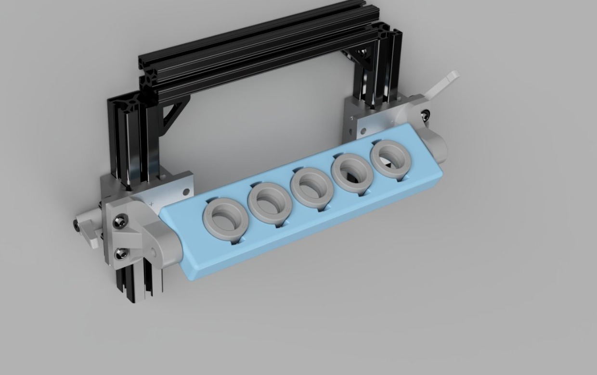
The problem
On an orthodontic cabinet, five hoses for air, water, and suction run from the cabinet to the tools. During fast-paced procedures the tools get picked up and set back down in different orders, and the hoses' slack wraps around each other. Picking up one tool can then pull another off the cabinet and onto the floor.
Every dropped tool stops the procedure: the orthodontist has to change gloves, disinfect the hose with CaviCide, wait over a minute for it to work, and change gloves again. Our client asked for a way to keep the hoses organized and off the floor.

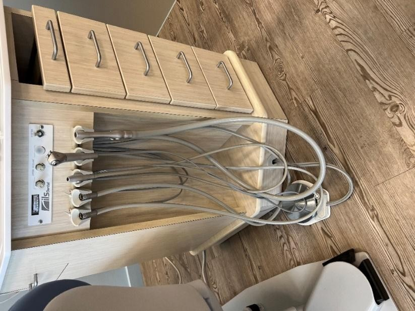
Any solution had to:
- Stay out of the orthodontist's way and add no resistance at the tool
- Need only minor modifications to the existing cabinet
- Withstand repeated CaviCide disinfection
- Cost under $500
What I did
I did all of the CAD, mechanical design, part selection, 3D printing for testing, and design iteration, and ran the finite element analysis. The team shared the research, client meetings, fabrication, physical testing, and report.
Concept selection
We developed three concepts: a climbing-belay-style guide with a retracting weight, a bar organizer, and a weighted pulley system. Feedback from peers and teaching assistants flagged the weighted designs, since a weight strong enough to retract a hose also adds tension the orthodontist has to pull against. The bar organizer scored highest in a weighted decision matrix, 92.5 out of 100, and we moved forward with it.

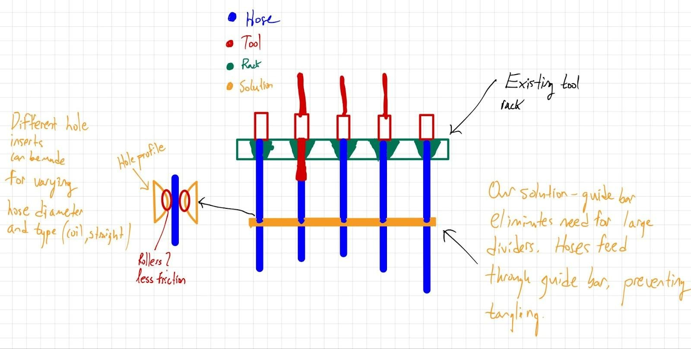
How it works
- The bar: a 3D-printed bar with five holes gives each hose its own track, so the hoses can't wrap around each other. If a tool slips while being put back, its hose drapes over the bar instead of falling to the floor.
- Universal inserts: each hole takes a two-piece insert that clamps around a hose, so the bar can be fitted to hoses of different sizes, shapes, and materials. Stainless steel balls in a groove inside the insert let the hose slide through with little friction. The insert twists 45° into the bar to lock in place, and splits apart so the hose can be removed for cleaning.
- Swivel mounts: the bar rides on bearings in a pair of 3D-printed swivel mounts, so it rotates to follow the hose being pulled instead of fighting it.
- Adjustable frame: black anodized T-slot aluminum framing with linear sleeve bearings lets the bar slide up and down and lock at any height with hand brakes. The frame mounts under the cabinet through a few clearance holes and comes off easily.

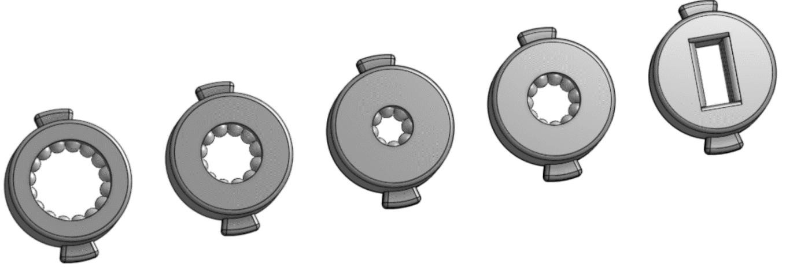

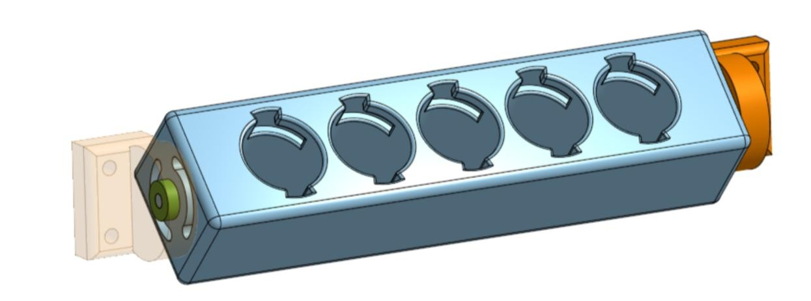
Material and part selection
The frame and hardware are metal, with corrosion-resistant fasteners, for rigidity and resistance to disinfectants. The bar, inserts, and swivel mounts are 3D-printed PLA, chosen after reviewing how common plastics hold up to isopropyl alcohol, CaviCide's active ingredient. I selected the framing, sleeve bearings, brakes, and bearings from McMaster-Carr and other suppliers, for a total of $351.49 against a $500 budget.
Prototyping and iteration
I 3D-printed each part to test fit and function, and revised the design based on what we found:
- Inserts: the first two-piece inserts held together with pegs that came apart easily, and the bearing grooves were too wide to keep the balls in. I redesigned them with a tongue-and-groove joint and tighter grooves.
- Bar: a first test section was bulky and caught the hoses on its edges, so I made the bar thinner. That saved material and weight and reduced contact with the hoses.
- Pivots: the printed pegs the bar pivoted on snapped when the bar was slid along the rails. I replaced them with steel rods and redesigned the swivel mounts so the rods pass through for easy disassembly.
- Simplification: the springs meant to center the bar turned out to be unnecessary, since the hoses naturally limit its rotation, so I removed them.
- Fit to the cabinet: the first full assembly was 3″ wider than planned. We reworked how the framing attached so it fits under the cabinet without sticking out, then lengthened the top rails once we measured the space under the real cabinet.

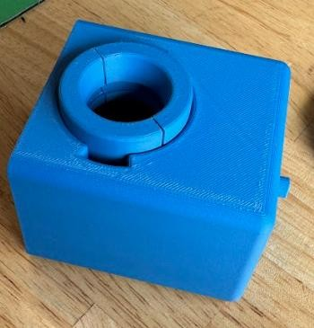

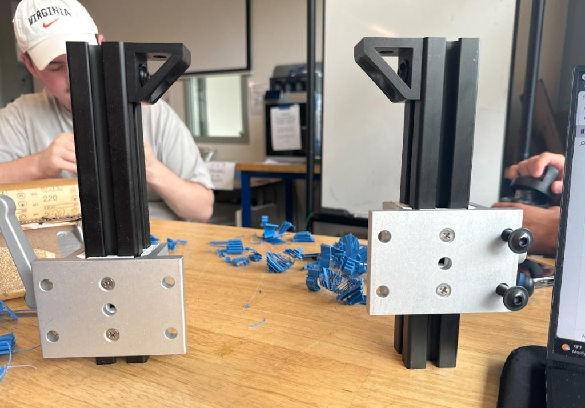

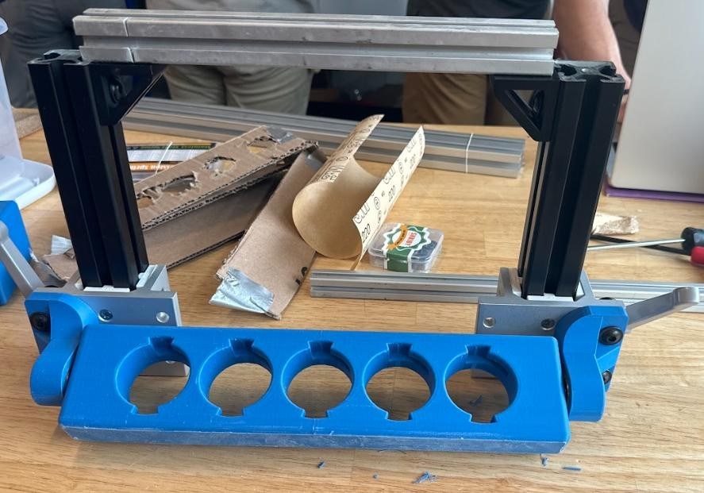

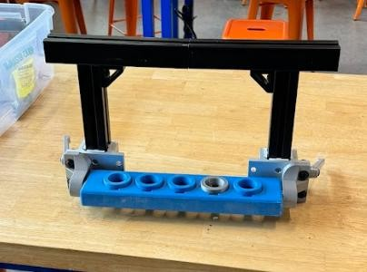
Technical drawings
I produced the final technical drawings for each custom part.

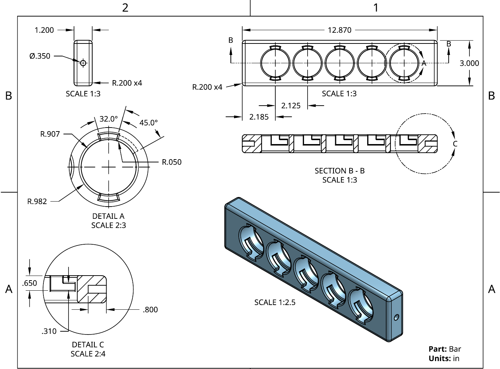

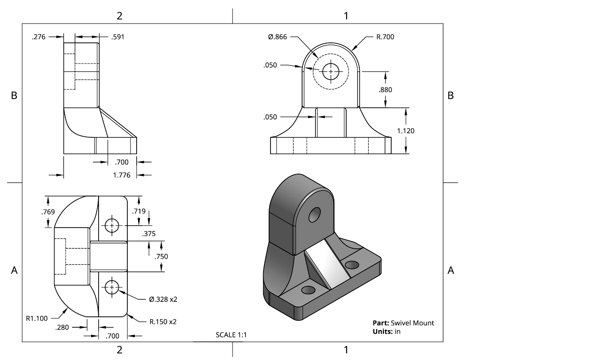

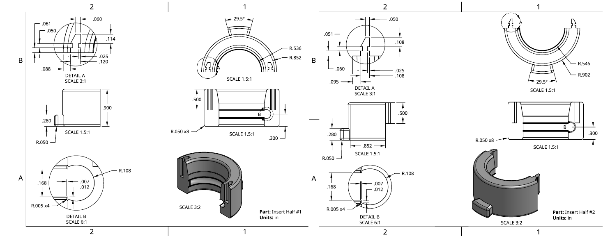
Testing and results
- Structural analysis: I ran FEA in Fusion 360 on the full assembly with a 10 N load on the bar, slightly more than the highest hose-pulling force we measured. It showed essentially no deformation and a minimum safety factor of 15, the highest value the simulation reports, against a target of 8.
- Pulling force: we measured the force to pull each hose to the patient chair with a spring scale, without the bar and with the bar at two heights. At the higher setting it took slightly less force than with no bar at all, and at the lower setting only slightly more.
- Disinfectant resistance: a printed insert soaked in isopropyl alcohol for 96 hours lost no mass.
- In the office: at Charlottesville Orthodontics, the inserts held the hoses in place and the frame lined up with the existing cabinet.

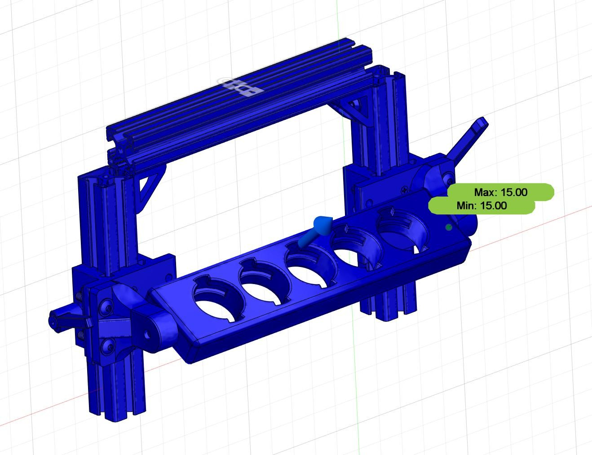

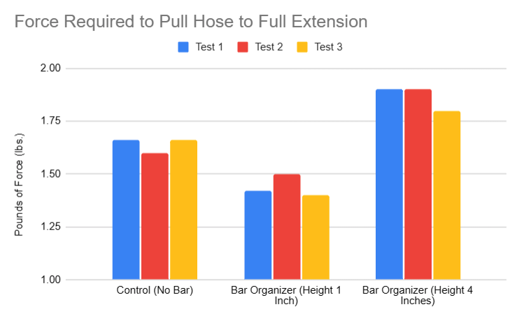
Testing also showed what to improve next. Hoses occasionally caught on the lips of the inserts, so the next version would flare the insert ends or add bearings at the rims. Riding on two separate tracks also made the bar hard for one person to raise evenly, so I would move it to a single central track. The bar was validated as a working prototype; the next step is testing it with orthodontists during real procedures.
Final report
The team's full 54-page report, including the background research, decision matrices, test procedures, and bill of materials.